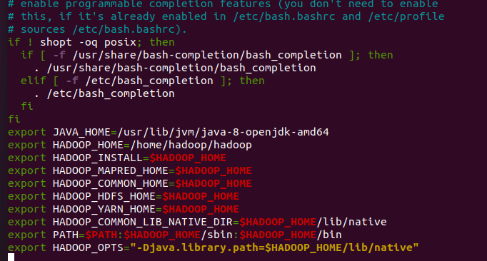
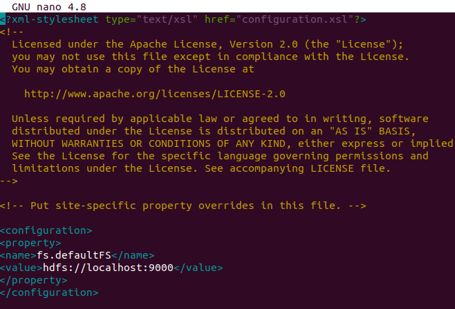
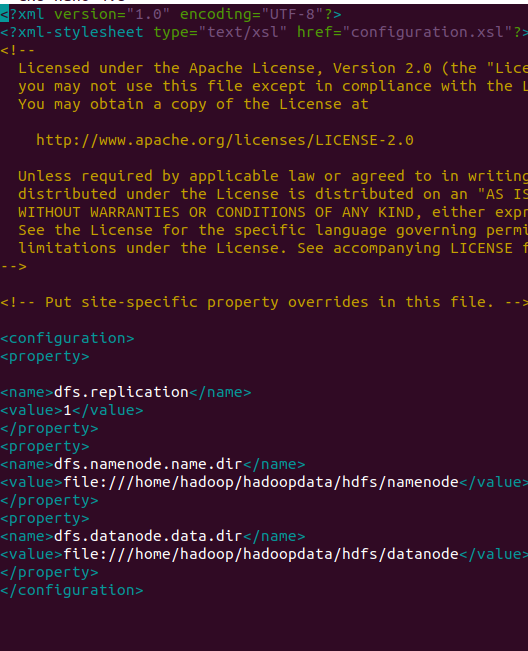
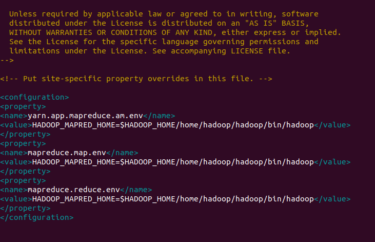
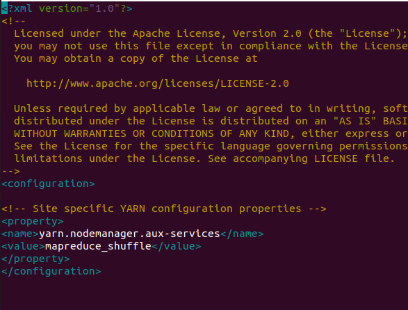

CIA-1 DEVISON PRINCE (22122118)
Hadoop Installation Guide
Step 1: Install Java Development Kit
Before you can set up Hadoop on your Ubuntu system, you need to ensure that you have the Java Development Kit (JDK) installed. Hadoop relies on Java, and we recommend using Java 8 since some Hadoop components, like Hive, work best with this version.
To install the Java Development Kit, open your terminal and execute the following command:
sudo apt update && sudo apt install openjdk-8-jdk
The above command updates your package list and installs the OpenJDK 8 development kit, which is essential for running Hadoop on your system.

After the installation is complete, you can proceed to the next steps to set up Hadoop.
Step 2: Verify the Java version
After successfully installing the Java Development Kit (JDK) in the previous step, it's important to verify the installed Java version to ensure that everything is set up correctly.
You can do this by opening your terminal and running the following command:
java -version
When you execute this command, it will display information about the installed Java version, including the version number and other details. This verification step ensures that Hadoop will work with the Java version you've installed.

If the command displays the Java version without errors, you can proceed with the Hadoop installation. However, if you encounter any issues, you may need to troubleshoot your Java installation before continuing with Hadoop setup.
Step 3: Install SSH
SSH (Secure Shell) is an essential component for secure communication within the Hadoop cluster. It provides a secure way to access and manage your Hadoop nodes, ensuring data integrity, confidentiality, and efficient distributed processing. This step involves installing SSH on your Ubuntu system.
You can easily install SSH by opening your terminal and running the following command:
sudo apt install ssh
Once the installation is complete, your system will have the necessary SSH components to support secure communication and authentication between nodes in your Hadoop cluster.
Having SSH properly configured is crucial for seamless interaction and data transfer within your Hadoop environment. Ensure that SSH is correctly set up before proceeding with Hadoop installation and configuration.
Step 4: Create the Hadoop User
Creating a dedicated user for Apache Hadoop is a crucial step in the installation process. By isolating Hadoop components within their own user account, you ensure proper control and security.
To create the "hadoop" user, open your terminal and run the following command:
sudo adduser hadoop
This command will guide you through the user creation process. You can set a password and provide additional information as needed. It's essential to remember the password you set, as you'll be using this user account for Hadoop-related tasks.

By having a dedicated user for Hadoop, you can manage and secure Hadoop components more effectively. It's a best practice in Hadoop installations to maintain good security and isolation between Hadoop and other system components.
Step 5: Switch User
Now that you've created the dedicated "hadoop" user, it's time to switch to this user account. This ensures that all subsequent Hadoop-related operations are performed within the dedicated environment.
To switch to the "hadoop" user, open your terminal and use the following command:
su - hadoop
After executing this command, you'll be working within the "hadoop" user's environment. This is essential for maintaining proper isolation between Hadoop and other system components. It also helps in managing permissions and access controls effectively.
Once you've switched to the "hadoop" user, you'll be ready to continue with the Hadoop installation process and configurations, ensuring that all operations are carried out within the designated Hadoop user account.
Step 6: Configure SSH
Configuring SSH is a crucial step to ensure secure communication within your Hadoop cluster. You'll set up SSH keys for password-less authentication, enhancing security and efficiency.
Follow these steps to configure SSH:
- Open your terminal or command prompt.
- Execute the following command to generate an SSH key pair:
ssh-keygen -t rsa
This command generates a public and private key pair. The private key should be kept secure, and the public key will be used for authentication.

Once the key pair is generated, you can proceed with the next steps in the Hadoop installation process, utilizing the SSH keys for secure communication between nodes in your Hadoop cluster.
Step 7: Set Permissions
Setting permissions is an essential part of configuring SSH to ensure the security and functionality of your Hadoop installation. This step involves two important actions:
- Appending your generated public SSH key to the authorized keys file.
- Applying the correct permissions to the authorized keys file.
Follow these steps to set permissions:
- Open your terminal or command prompt.
- Append your SSH public key to the authorized keys file by executing the following command:
cat ~/.ssh/id_rsa.pub >> ~/.ssh/authorized_keys
By appending the public key to authorized_keys, you enable password-less authentication for the "hadoop" user.
- Apply the correct permissions to the authorized keys file using the following command:
chmod 640 ~/.ssh/authorized_keys
Setting the permissions to 640 ensures that the authorized keys file is readable only by the owner and group, enhancing security.
With these permissions correctly set, you've completed an important security configuration for your Hadoop cluster, allowing for secure communication between nodes.
Step 8: SSH to the localhost
SSH (Secure Shell) is crucial for secure communication within your Hadoop cluster. Before proceeding with cluster setup and configuration, it's essential to test the SSH connectivity to your local machine (localhost).
When you run this command, you'll be prompted to authenticate the host by adding RSA keys to known hosts. This is an important step in establishing secure communication.
Here's how you can perform this step:
- Open your terminal or command prompt.
- Execute the following command:
ssh localhost
By running this command, you verify that SSH is set up correctly and can be used for secure communication within the Hadoop cluster. It also helps ensure the integrity, confidentiality, and efficiency of distributed processing.

If the authentication process is successful, you're ready to proceed with the next steps in setting up your Hadoop cluster.
Step 9: Switch User Again
Throughout the Hadoop installation and configuration process, you'll often need to work with specific user accounts, such as the "hadoop" user. This step involves switching to the "hadoop" user account, which you've previously created.
Here's why this step is important:
- Running Hadoop services and commands with dedicated user accounts is a security best practice. It helps isolate the Hadoop environment and its resources from other users on your system.
- By switching to the "hadoop" user account, you ensure that Hadoop components are managed under the appropriate user context, which simplifies access control and resource management.
To switch to the "hadoop" user account, follow these instructions:
- Open your terminal or command prompt.
- Execute the following command:
su - hadoop
After running this command, you'll be working in the context of the "hadoop" user account, allowing you to perform Hadoop-related tasks securely and efficiently.
Continue with the installation and configuration steps in the subsequent sections of this guide while operating as the "hadoop" user.
Step 10: Install Hadoop
At this stage, you'll be downloading the Hadoop distribution and performing the initial setup. Hadoop is the core component of your big data processing cluster.
Here are the details of this step:
- Download Hadoop: The first command downloads the Hadoop distribution from the official Apache Hadoop website. This specific example uses Hadoop version 3.3.6, but you can modify the URL to download a different version if needed.
- Unzip Hadoop: Once the download is complete, the second command extracts the downloaded Hadoop archive. It's important to unpack the contents to make it accessible for configuration and use.
- Optional Folder Renaming: The last command provides an optional step. It renames the extracted Hadoop folder to a simpler name (in this case, "hadoop"). Renaming can make paths and configuration more straightforward by removing version-specific information from the folder name.
To proceed with installing Hadoop, follow these steps:
- Open your terminal or command prompt.
- Execute the following commands one by one:
wget https://dlcdn.apache.org/hadoop/common/hadoop-3.3.6/hadoop-3.3.6.tar.gz
tar -xvzf hadoop-3.3.6.tar.gz
mv hadoop-3.3.6 hadoop
After completing these steps, you'll have Hadoop downloaded and ready for further configuration and setup.
Step 11: Configure Hadoop and Java Environment Variables
nano ~/.bashrc
Append the below lines to the file:
export JAVA_HOME=/usr/lib/jvm/java-8-openjdk-amd64
export HADOOP_HOME=/home/hadoop/hadoop
export HADOOP_INSTALL=$HADOOP_HOME
export HADOOP_MAPRED_HOME=$HADOOP_HOME
export HADOOP_COMMON_HOME=$HADOOP_HOME
export HADOOP_HDFS_HOME=$HADOOP_HOME
export HADOOP_YARN_HOME=$HADOOP_HOME
export HADOOP_COMMON_LIB_NATIVE_DIR=$HADOOP_HOME/lib/native
export PATH=$PATH:$HADOOP_HOME/sbin:$HADOOP_HOME/bin
export HADOOP_OPTS="-Djava.library.path=$HADOOP_HOME/lib/native"
After adding these lines to the ~/.bashrc file, make sure to save the file and exit the text editor.

Step 11: Configuring Hadoop
cd hadoop/
mkdir -p ~/hadoopdata/hdfs/{namenode,datanode}
Next, edit the core-site.xml file and update it with your system's hostname. Open the core-site.xml file:
nano $HADOOP_HOME/etc/hadoop/core-site.xml
Change the "fs.defaultFS" property to match your system's hostname:
<configuration>
<property>
<name>fs.defaultFS</name>
<value>hdfs://localhost:9000</value>
</property>
</configuration>

Save and close the file.
Proceed to edit the hdfs-site.xml file:
nano $HADOOP_HOME/etc/hadoop/hdfs-site.xml
Update the "dfs.replication," "dfs.namenode.name.dir," and "dfs.datanode.data.dir" properties as shown below:
<configuration>
<property>
<name>dfs.replication</name>
<value>1</value>
</property>
<property>
<name>dfs.namenode.name.dir</name>
<value>file:///home/hadoop/hadoopdata/hdfs/namenode</value>
</property>
<property>
<name>dfs.datanode.data.dir</name>
<value>file:///home/hadoop/hadoopdata/hdfs/datanode</value>
</property>
</configuration>

Continue by editing the mapred-site.xml file:
nano $HADOOP_HOME/etc/hadoop/mapred-site.xml
Apply the following changes:
<configuration>
<property>
<name>yarn.app.mapreduce.am.env</name>
<value>HADOOP_MAPRED_HOME=$HADOOP_HOME/home/hadoop/hadoop/bin/hadoop</value>
</property>
<property>
<name>mapreduce.map.env</name>
<value>HADOOP_MAPRED_HOME=$HADOOP_HOME/home/hadoop/hadoop/bin/hadoop</value>
</property>
<property>
<name>mapreduce.reduce.env</name>
<value>HADOOP_MAPRED_HOME=$HADOOP_HOME/home/hadoop/hadoop/bin/hadoop</value>
</property>
</configuration>

Lastly, configure the yarn-site.xml file:
nano $HADOOP_HOME/etc/hadoop/yarn-site.xml
Update it as follows:
<configuration>
<property>
<name>yarn.nodemanager.aux-services</name>
<value>mapreduce_shuffle</value>
</property>
</configuration>

Save and close the file.
Step 12: Start Hadoop Cluster
Now that you've configured Hadoop, it's time to start your Hadoop cluster. This step involves initializing the Namenode and launching various Hadoop services.
Here are the key actions in this step:
- Initialize Namenode: The first command, "hdfs namenode -format," initializes the Namenode. This command prepares the filesystem for use and ensures that it's in a consistent state.
- Start Hadoop Services: The second command, "start-all.sh," is used to start various Hadoop services. This includes services like the Namenode, Datanode, ResourceManager, and NodeManager, among others.
Here's how to execute these commands:
- Open your terminal or command prompt.
- Execute the following commands:
hdfs namenode -format

start-all.sh

After running these commands, your Hadoop cluster will be up and running, and you can verify its status using the "jps" command to check the running Java processes. This step is essential to ensure that your Hadoop cluster is operational and ready to process data.

Step 13: Access Hadoop Namenode and Resource Manager
If you've successfully started your Hadoop cluster, you can now access the Hadoop Namenode and Resource Manager via a web browser. Follow these steps to access these web interfaces:
- Install net-tools (if not already installed): This step is optional but may be required if you don't have the necessary network tools installed. You can install it with the following command:

sudo apt install net-tools
- Determine your IP address: Use the following command to find your system's IP address:
ifconfig
For example, if your IP address is 192.168.1.6, you can access the Hadoop Namenode by opening your web browser and visiting the following URL:
http://192.168.1.6:9870

To access the Hadoop Resource Manager, visit the following URL:
http://192.168.1.6:8088

Step 14: Verify the Hadoop Cluster
After setting up your Hadoop cluster, you can perform some basic checks to ensure that everything is functioning correctly. Follow these steps to verify your Hadoop cluster:
- Create test directories in the HDFS: Use the following commands to create directories in the Hadoop Distributed File System (HDFS):
hdfs dfs -mkdir /test1
hdfs dfs -mkdir /logs
- List directories in HDFS: To ensure that the directories are created, run the following command:
hdfs dfs -ls /
Additionally, you can upload log files from your host machine into the Hadoop file system. For example, to put log files into the Hadoop file system, you can use the following command:
hdfs dfs -put /var/log/* /logs/

You can also verify these files and directories in the Hadoop web interface. To do this, follow these steps:
- Access the Hadoop web interface: Open your web browser and visit the Hadoop web interface URL.
- Browse the file system: Once in the web interface, you can click on the "Utilities" or a similar section to browse the Hadoop file system and verify the presence of your files and directories.
Step 15: Stop Hadoop Services
When you're done using your Hadoop cluster or need to shut it down for maintenance, you can stop all Hadoop services. To do this, execute the following command as the "hadoop" user:
stop-all.sh
This command will gracefully stop all running Hadoop services. It's essential to stop the services properly to ensure a clean shutdown.